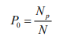

Este apartado ofrece lineamientos básicos para identificar, adaptar y desarrollar indicadores que permitan analizar riesgos a nivel local. Su propósito es facilitar el uso de datos disponibles en el territorio y apoyar la toma de decisiones informadas en contextos específicos.
Vulnerabilidad Socioeconómica
Índice de recuento o Tasa de pobreza
Mide la proporción de la población que se considera pobre, a menudo denotada como P₀.

Donde:
- Np = número de personas pobres
- N = población total (o muestra)
Tasa de Desempleo
Porcentaje de la población desocupada en relación a la población económicamente activa.
Tasa de Desempleo (TD):
TD = (D / PEA) * 100
Donde:
- TD = Tasa de Desempleo
- D = Número de Desempleados
- PEA = Población Económicamente Activa
Dependencia económica
Expresa el porcentaje de número de personas en edades dependientes (0 a 14 y 65 y más años de edad) por cada cien en edad económicamente productiva (15 a 64 años de edad)
DE= (Σ polbación entre 0 a 14 y 65 y más años / población de 15 a 64 años) * 100
Tasa de inactividad
Es el porcentaje de la población económicamente inactiva o no económicamente activa, con respecto a la población en edad de trabajar (10 años y más), durante un determinado periodo.
Tasa de inactividad = (PEI / PET) *100
Donde:
- PEI = Población económicamente inactiva
- PET = Población de edad de trabajar
Tasa de exclusión escolar
La exclusión escolar ha sido considerada como parte de las “expresiones educativas de la pobreza… la exclusión educativa en cuanto acceso, permanencia y eficiencia, son las desigualdades en los propios sistemas educativos” (Riveros, 1999)
Fuente: enalce 1 / Fuente: enalce 2
Tasa de Incidencia
La tasa de incidencia es el número de personas que contraen una enfermedad durante un determinado período de tiempo por cada 1.000 habitantes expuestos al riesgo. La tasa de incidencia y otras tasas de morbilidad varían tan ampliamente que es posible utilizar cualquier constante para expresar la tasa de manera clara (desde "por 100" hasta "por 100.000").
TI = (Número de personas que contraen X enfermedad durante un período determinado / Población en riesgo) * K
Donde:
- k = constante para expresar la tasa
Falta de Capacidad de Respuesta
Acceso a Electricidad
La tasa de acceso a la electricidad para un determinado país o área, que representa la proporción de la población que se beneficia del acceso a la electricidad, se define como el número total de personas que viven en hogares con acceso a la electricidad dividido entre la población total.
AE = Población con acceso / Población total
Acceso al Agua
La tasa de acceso al agua para un determinado país o área, que representa la proporción de la población que se beneficia del acceso a un sistema agua, se define como el número total de personas que viven en hogares con acceso dividido entre la población total.
AE = Población con acceso / Población total
Indices intermedios
Medir el nivel relativo de riesgo a nivel local, considerando la incidencia de por ejemplo enfermedades transmitidas por vectores (arbovirosis) como Dengue Clásico, Dengue Hemorrágico y Chikungunya. Este índice puede formar parte de la dimensión de “Vulnerabilidad” o “Condiciones de salud” dentro del enfoque del INFORM Risk Index adaptado a nivel local.
Pasos a seguir.
Seleccionar datos a utilizar
Para cada aldea o unidad geográfica, se consideran:
| Código | Indicador | Descripción |
|---|---|---|
| A | % de personas con Dengue Clásico | Casos / Población total × 100 |
| B | % de personas con Dengue Hemorrágico | Casos / Población total × 100 |
| C | % de personas con Chikungunya | Casos / Población total × 100 |
Ponderación de Indicadores
Se asignan pesos a cada indicador según su gravedad epidemiológica:
| Indicador | Peso |
|---|---|
| Dengue Clásico (A) | 0.3 |
| Dengue Hemorrágico (B) | 0.4 |
| Chikungunya (C) | 0.3 |
Nota: Puedes ajustar los pesos según el contexto nacional/local o con expertos en la materia
Cálculo del índice intermedio
Se calcula como una combinación ponderada de los valores normalizados:
Indice Intermedio=(A ×0.3)+(B ×0.4)+(C ×0.3)